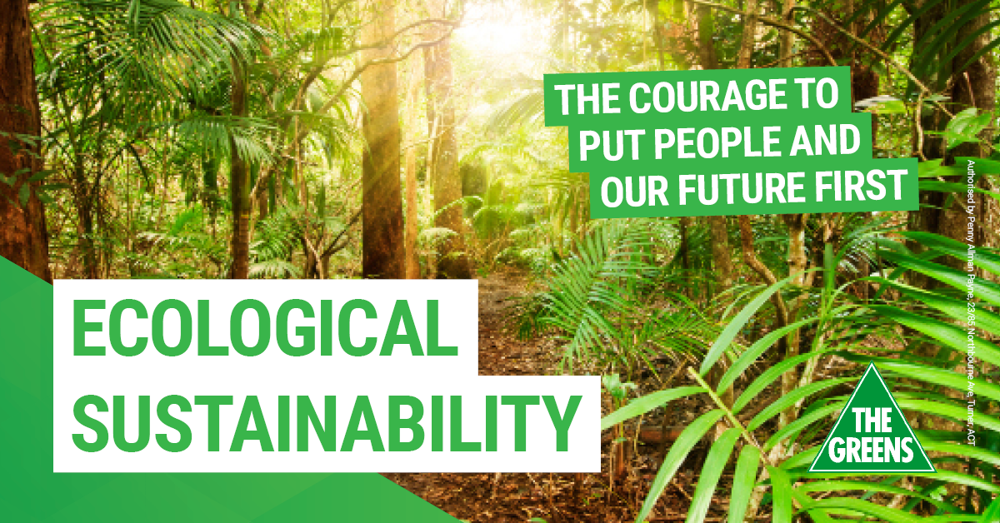

This is our mission to make the trust bigger ang larger to protect the climate of our country.
Short breif of our history:
In a forest everything has its place, from the mightiest animal to the innocuous bug. Each lives in balance and harmony with the other. Life in a forest embodies plenitude. None of its inhabitants takes more than it needs; there’s plenty for all.
Despite being home to diverse species, forests are pristine. Seldom does one find a mess in a forest. God has provided natural clean-up agents. What is waste for one creature is useful or essential to another creature. The eternal circle of life is palpable in its entire splendour. To survive in a forest you need to be in tune with the natural rhythms that is all-inclusive.
A forest contributes to the welfare of the entire planet, breathing out life-giving oxygen into the atmosphere while serving as habitat to a variety of life forms. It is a rich source of curative herbs and micro-organisms and we are yet to know all there is to know about them. We may have left our imprints on the moon, but are yet to fully explore the potential of a natural forest system.
Even without gaining complete knowledge of forests, we choose to unleash wanton destruction on them, only fuelling our greed. Rainforests at one time covered more than 14 per cent of the earth’s surface. Today, they are less than 6 per cent. If we continue consuming forests at the current rate, we might lose these divine life sustainers in just another 40 years.